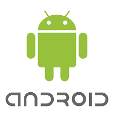

Android es un sistema operativo móvil basado en Linux, desarrollado inicialmente por Android Inc. y adquirido por Google en 2005. Está diseñado principalmente para teléfonos inteligentes y tabletas.
Android Inc. fue fundada en 2003 por Andy Rubin, Rich Miner, Nick Sears y Chris White, con la intención de crear un sistema operativo para cámaras digitales. Sin embargo, el mercado cambió rápidamente y la empresa reorientó su esfuerzo hacia los teléfonos móviles.
Google adquirió Android en 2005, y a partir de ahí comenzó una etapa de desarrollo acelerado. En 2007, se presentó públicamente el sistema Android y se creó la Open Handset Alliance, un consorcio de empresas comprometidas con el desarrollo de estándares abiertos para dispositivos móviles. En 2008, se lanzó el primer dispositivo Android: el HTC Dream (T-Mobile G1).
Una de las claves del éxito de Android ha sido su modelo abierto, que permite a los fabricantes adaptar el sistema a sus propios dispositivos. Esto impulsó su adopción masiva por marcas como Samsung, Motorola, Huawei, Xiaomi y muchas otras. A lo largo de los años, Android ha lanzado múltiples versiones, cada una con mejoras en diseño, rendimiento, seguridad, inteligencia artificial, control parental, accesibilidad y conectividad.
La Google Play Store, con millones de aplicaciones, es el principal canal de distribución de software para dispositivos Android. Hoy, Android domina el mercado mundial de smartphones, con más del 70% de participación global.